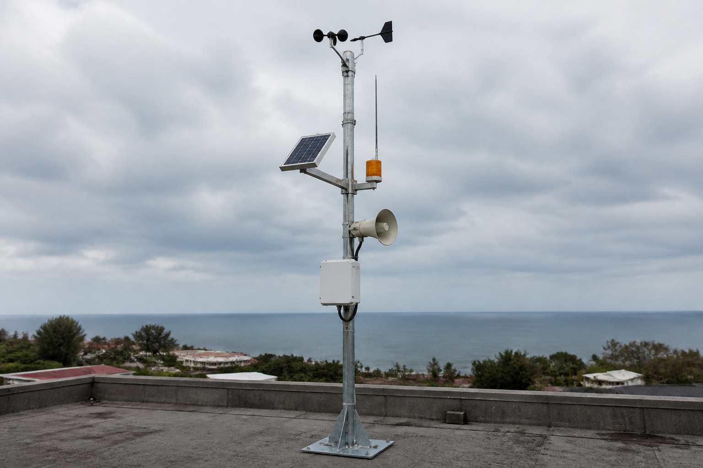

Thème 2 · Martinique — 3e · S6 : Programmer l'alerte
Lire, modifier et valider le programme de la station — pour une alerte graduée plus intelligente
🖥️ Ordinateur partagé (salle de techno, CDI — le centre de documentation et d'information) : un autre élève qui ouvre cette page sur la même session verra tes réponses.
Quand tu as fini : imprime en PDF si tu veux garder une trace, puis clique sur « 🗑 Effacer ma sauvegarde ».
📖 Rappel : la situation et ton hypothèse
🎯 Avant de commencer : trois choses à lire
- 📚 Ce que tu vas apprendre
Modifier le programme de la station pour créer une alerte graduée, sans casser ce qui marche.
Et prouver, par des tests, que la modification est juste. - 🛠 Ce que tu dois savoir faire
Trier les données d'un programme : celles qu'il utilise, celles qu'il produit.
Modifier un programme, puis le tester. - ✅ Comment réussir
Lis bien les signes : « > » (plus grand que) n'est pas « >= » (plus grand ou égal).
Teste avec des valeurs au seuil, juste au-dessous et juste au-dessus.
Après chaque exercice, compare avec la correction.
🔄 Avant de commencer : ce que je vérifie
Pour toi, sans note : coche ce qui est déjà en place. Sous chaque ligne, un lien pour le reprendre si tu n'en es pas sûr·e.
-
→ pas encore sûr·e ? relis « Que racontent les relevés du jardin ? » dans la synthèse 4e_C6.1 à C6.3
-
→ pas encore sûr·e ? relis « Comment compléter la décision du programme ? » dans la synthèse 4e_C6.2
-
→ pas encore sûr·e ? relis « Comment modifier le programme sans rien casser ? » dans la synthèse 4e_C6.1 à C6.3
Dans cette séquence : le programme déclenche une alerte cyclonique.
Un arrosage raté se rattrape le lendemain ; une alerte ratée, non.
Tu vas devoir écrire un programme dont on peut prouver qu'il réagit au bon moment, et pas seulement constater qu'il a l'air de marcher.
Un mot à garder en tête : un programme est une suite de décisions écrites, et une décision oubliée est un comportement imprévisible.
📋 Référentiel officiel (programme 2024)
| Code | Sous-compétence travaillée | Socle | Activités |
|---|---|---|---|
| 3e_C6.1 | Déterminer les données utilisées et produites par un programme associé à une fonctionnalité en vue de le modifier. | D1.3, D2 | 1, 2, R |
| 3e_C6.3 | Modifier et tester le programme associé à une nouvelle fonctionnalité d'un OST (objet ou système technique). | D2, D4 | 3, 4, 5, R |
Compétence parente C6 — BO n°9 du 29/02/2024.
Le code 3e_C6.2 (programmer un algorithme lié à une nouvelle fonctionnalité) est couvert par « L'auto-test de la station ».
Pour réviser la lecture d'algorigrammes avant la séance 2 : l'entraînement DNB (DNB : diplôme national du brevet), 30 exercices corrigés.
Référence normative : programme de technologie du cycle 4, BO n°9 du 29 février 2024.
Codification opérationnelle : les codes 3e_C6.1 · 3e_C6.2 · 3e_C6.3 servent à ranger les séquences ; ils ne viennent pas du programme officiel.
Les formulations ci-dessus sont celles du référentiel.
CRCN : cadre de référence des compétences numériques ; la compétence travaillée ici est la 3.4 Programmer.
Le mode essentiel masque les corrections et les compléments : il ne reste que les consignes et les exercices. À activer si la page te paraît trop chargée.
📖 Situation déclenchante
🧪 Simulation scolaire : le quartier, ses habitants et les seuils de cette séquence sont inventés pour l'exercice.
La vraie vigilance météo, en Martinique, c'est Météo-France qui la donne : elle ne se décide pas avec un seul anémomètre.
La station du club est réparée, sa sirène fonctionne.
Mais à la réunion du quartier (une histoire inventée), une habitante soulève un vrai problème :
« Votre sirène se déclenche pareil pour une tempête et pour un ouragan.
Et quand le niveau est orange, rien ne s'allume dehors : on ne sait pas si c'est sérieux. »
Elle a raison : dans notre maquette, au niveau orange, le message part vers l'application, mais aucun signal lumineux ne s'allume sur place.
Le club techno décide d'améliorer la fonctionnalité d'alerte : une alerte graduée — gyrophare seul en orange, sirène seule en rouge, les deux en violet.
Pas besoin de changer le matériel (le gyrophare est déjà branché) : tout se joue dans le programme.
Encore faut-il le comprendre avant de le modifier… et prouver, essais à l'appui, que la nouvelle version fonctionne.

Aujourd'hui, au niveau orange, le gyrophare reste éteint.
Image générée par IA (Canva) : ce n'est pas une photographie.
❓ Problématique
Comment modifier le programme de la station pour créer une alerte graduée —
sans casser ce qui fonctionne, et en prouvant que la modification est correcte ?
💭 Mes hypothèses de départ
🪜 Version étayée — des phrases à compléter
Le niveau attendu est exactement le même qu'avec la consigne libre : ces débuts de phrases retirent l'obstacle de la rédaction, pas l'exigence scientifique.
Recopie-les et complète chaque « ____ ».
- Avant de modifier un programme, il faut connaître ____.
- Il faut aussi savoir ____, sinon on risque de ____.
- Le plus dangereux serait de ____ sans avoir compris ____.
🪜 Version étayée — des phrases à compléter
Le niveau attendu est exactement le même qu'avec la consigne libre : ces débuts de phrases retirent l'obstacle de la rédaction, pas l'exigence scientifique.
Recopie-les et complète chaque « ____ ».
- J'essaierai le programme avec un vent de ____ km/h, et je prévois que ____.
- Pour être sûr·e de n'avoir rien cassé, je referais surtout les essais qui ____.
- Si un ancien essai ne donne plus le même résultat, cela signifie ____.
🧰 Choix de l'outil
| Outil | Ce que tu y fais | Ailleurs |
|---|---|---|
| CodeLab Techno (l'éditeur de cette page) et son banc d'essai | Tu modifies le vrai texte Python du programme.
Le banc l'exécute sur des vents inventés et compare ses sorties au cahier des charges. Tout reste sur cet appareil, même sans Internet. | — |
| mBlock 5 / Vittascience (versions 🅰 et 🅱) | Le programme exécuté sur la maquette Arduino de la station, ou en simulation. | Python sur ordinateur (Bonus) |
Le langage est Python, en vrai.
Le banc d'essai de la page exécute un passage du programme, comme une mesure de la station : il ne remplace pas l'essai sur la maquette (version 🅰).
🔀 Trois façons de vivre la séquence
🅰 Matériel réel
Maquette de la station, avec une carte Arduino UNO et des modules Grove : une LED (diode électroluminescente, en anglais Light-Emitting Diode) joue le gyrophare, un buzzer joue la sirène.
Téléverser le programme modifié avec mBlock, ou avec Arduino IDE (l'environnement de développement d'Arduino), puis dérouler le plan de tests en soufflant… sur le capteur simulé (potentiomètre = vent).
🅱 Simulation
VittaScience ou mBlock : recréer l'algorithme en blocs, exécuter les 10 essais du banc virtuellement.
🅲 Sans matériel
Tout est dans cette page.
CodeLab Techno pour modifier le programme, son banc d'essai pour l'exécuter.
Tes prévisions écrites avant d'exécuter (activité 5) : la méthode professionnelle, machine ou pas.
⌨ Le programme de la station — CodeLab Techno
Version de ton programme : version 1 d'origine
En séance 1, tu lis la version 1 d'origine, sous chaque activité.
À partir de la séance 2, tu la modifies ici : elle se sauvegarde toute seule sur cet appareil.
⌨ Le programme est affiché dans l'activité en cours, sous sa consigne.
⌨ Ouvrir l'éditeur ici
🔍 Ce qui a changé depuis la version 1 d'origine
—
🎫 Billet d'entrée — trois questions, sans note
Une question par ligne du bloc « Avant de commencer ».
Elles ne sont pas notées et ne comptent pas dans ta progression : elles te disent quoi relire avant de te lancer.
« Je ne sais pas encore » est une réponse utile.
✅ Correction complète du billet — ouvre-la après avoir vérifié
- Les relevés montrent un comportement différent de celui qu'on attendait, et on a vérifié que le capteur mesure juste. Que cherche-t-on alors ?
✅ la règle du programme qui autorise ce comportement
✘ « un capteur défaillant, qu'il faudra remplacer » : on a vérifié que le capteur mesure juste, le remplacer ne changera rien. Le programme fait exactement ce qu'on lui a écrit : cherche quelle règle le permet.
✘ « à réécrire le programme entier, depuis le début » : Tout réécrire, c'est risquer de nouvelles erreurs sans comprendre la première. On cherche d'abord la règle en cause. - « SI vent > 90 ALORS sirène SINON pas de sirène », le vent en kilomètres par heure. Avec un vent de 60 kilomètres par heure, que fait le programme ?
✅ ne déclenche pas la sirène : le SINON s'applique
✘ « s'arrête : aucune des deux branches ne convient » : Un SI … SINON couvre tous les cas : quand la condition est fausse, c'est le SINON qui s'applique.
✘ « déclenche la sirène : le vent souffle déjà fort » : Le programme ne juge pas « fort » : il compare 60 à 90. Est-ce que 60 > 90 ? - Avant de modifier un programme qui marche, que fait-on ?
✅ sauvegarde l'original pour pouvoir y revenir
✘ « le teste directement sur l'objet réel » : Tester sur l'objet réel sans copie de l'original, c'est risquer de ne plus pouvoir revenir en arrière.
✘ « efface l'ancien pour ne pas se tromper » : Si la modification échoue, tu n'aurais plus le programme qui marchait. On le garde de côté.
📖 Séance 1 — Lire le programme avant d'y toucher
Question directrice : quelles données ce programme utilise-t-il, et lesquelles produit-il ?
La carte d'identité du programme
⏱ 25 min🗂 La fiche de l'activité : objectif, compétence, production attendue, ressources
① Lis la version 1 d'origine du programme, juste en dessous.
② Pour chaque donnée, dis d'où vient sa valeur.
③ Relève les deux lignes demandées.
Une donnée utilisée est soit une mesure (le capteur fournit 95 km/h), soit un paramètre (le concepteur a choisi 90).
Une donnée produite est calculée par le programme : un état (la station retient « rouge »), une décision mémorisée (
sirene_active = True), un message.
La commande vient ensuite :
activer_sirene() fait vraiment sonner.💡 Aide de niveau 1
Pour chaque donnée, cherche la ligne où elle reçoit sa valeur, à gauche d'un « = ».
À droite du « = », tu lis lire_capteur(…) ? C'est une mesure.
Un nombre écrit une fois pour toutes en tête ? Un paramètre.
Une valeur qui change selon les tests, ou un texte assemblé ? Elle est produite.
💡💡 Aide de niveau 2
vent_kmh et pression_hpa viennent de lire_capteur(...) (lignes 6-7) : des mesures.
SEUIL_* sont écrits par le concepteur (lignes 2-4) : des paramètres.
vigilance, sirene_active et message sont calculés par le programme : produits.
Cherche si une ligne compare pression_hpa à quelque chose.
Le message est fabriqué ligne 21, à partir de vigilance.
✅ Correction complète
Le schéma complet : compare-le avec tes réponses.
D'où vient chaque donnée :
vent_kmh : utilisée — une mesure, lue sur l'anémomètre ligne 6.
SEUIL_OURAGAN : utilisée — un paramètre, choisi par le concepteur ligne 4.
vigilance : produite — un état, choisi par les tests (lignes 9 à 19).
sirene_active : produite — une décision mémorisée (lignes 10, 14 et 17).
pression_hpa : utilisée — une mesure, lue sur le baromètre ligne 7.
message : produite — un texte assemblé ligne 21, puis envoyé ligne 22.
La mesure qui ne change rien : pression_hpa.
Elle est lue, mais aucun test ne la compare : changer la pression ne change ni le niveau, ni la sirène.
C'est une piste d'amélioration (Bonus, défi pression).
La ligne 21 relit vigilance pour fabriquer le message : une donnée produite peut être réutilisée plus bas.
Lignes : vent_kmh est lu ligne 6.
message est fabriqué ligne 21.
Méthode : pour chaque variable, on cherche D'OÙ vient sa valeur.
Capteur : une mesure. Écrite par le concepteur : un paramètre. Calculée par le programme : une donnée produite.
Pourquoi c'est crucial : modifier un programme sans connaître ses données, c'est risquer de casser une donnée dont une autre partie du système a besoin (le message part vers l'application !).
SEUIL_OURAGAN comme une mesure (aucun capteur ne fournit 118 : c'est un réglage) ; classer vigilance en « utilisée » parce qu'elle sert dans le message (elle est d'abord PRODUITE, puis relue) ; croire que toute mesure lue change l'alerte.C'est la compétence C6.1 — le préalable de toute modification sûre.
Tracer l'exécution à la main
⏱ 20 min🗂 La fiche de l'activité : objectif, compétence, production attendue, ressources
① Pour chaque situation, suis la version 1 d'origine ligne à ligne, dans ta tête ou sur une feuille de brouillon.
② Donne les valeurs produites.
③ Après « Vérifier », compare ta trace au chemin suivi par la machine.
Situation A : vent_kmh = 95
Situation B (piège classique) : vent_kmh = 118 exactement
🪜 Version étayée — des phrases à compléter
Le niveau attendu est exactement le même qu'avec la consigne libre : ces débuts de phrases retirent l'obstacle de la rédaction, pas l'exigence scientifique.
Recopie-les et complète chaque « ____ ».
- Dans la situation B, la valeur 118 est exactement ____.
- L'opérateur de comparaison de la ligne 12 est ____, ce qui veut dire que ____.
- Le résultat est donc ____, alors qu'avec ____ on aurait obtenu ____.
✍ Ta justification sera relue par ton professeur : « Vérifier » regarde seulement qu'elle est écrite et qu'elle parle de 118 — c'est toi qui la compares à la correction.
💡 Aide de niveau 1
Descends les tests dans l'ordre : 95 est-il > 118 ? Non → suivant.
95 > 90 ? … Le PREMIER test vrai gagne, les suivants sont ignorés (c'est le rôle de elif).
💡💡 Aide de niveau 2
A : 95 > 118 ? Faux. 95 > 90 ? Vrai → rouge, sirène True.
B : 118 > 118 est FAUX (l'opérateur > est strict !) → on passe au test suivant : 118 > 90 → rouge.
Pour avoir violette, il faut 119 ou plus (le vent est mesuré en km/h entiers).
✅ Correction complète
A : vigilance = "rouge", sirene_active = True.
95 > 118 est faux, 95 > 90 est vrai : la branche rouge s'exécute, les tests suivants sont sautés.
B : vigilance = "rouge".
Ligne 12, le test est vent_kmh > SEUIL_OURAGAN, avec un > strict : 118 > 118 est faux.
Ligne 15, 118 > 90 est vrai : la branche rouge s'exécute.
✍️ Une justification juste, par exemple : « 118 ne dépasse pas 118, donc le premier test est faux ; il dépasse 90, donc c'est rouge. »
D'autres phrases sont justes aussi : l'important est de dire quel test est faux, et lequel est vrai ensuite.
C'est le genre de « valeur frontière » qui piège les programmes (et les programmeurs) : on la retrouve au plan de tests.
Méthode de la trace : une ligne à la fois, en notant la valeur de chaque variable — c'est ce que fait la machine, ni plus ni moins.
Le chemin suivi, pas à pas, est sous « Vérifier ».
elif suivants sont ignorés ; tracer de tête sans noter les valeurs.🔁 Reprise : sans regarder, retrouve
1. Réponds de mémoire, sans revenir en arrière.
2. Clique sur « ✔ Vérifier ma reprise ».
3. Si tu t'es trompé·e, suis le lien vers le rappel.
⏱ 3 min · cette reprise ne compte pas dans tes étoiles : elle te dit ce que tu as retenu.
1. Deux lignes du programme de la station :
SEUIL_ROUGE = 90
vent_kmh = lire_capteur("anemometre")
2. Le vent mesuré vaut 90 km/h. La station exécute :
vigilance = "verte"
if vent_kmh > 118:
vigilance = "violette"
elif vent_kmh > 90:
vigilance = "rouge"
elif vent_kmh > 50:
vigilance = "orange"
✏ Séance 2 — Modifier le programme
Question directrice : comment ajouter l'alerte graduée sans casser l'existant ?
Avant de commencer : si lire un algorigramme n'est pas encore automatique pour toi, va t'entraîner — l'entraînement DNB, 30 exercices corrigés.
Trois versions du même programme, pour savoir toujours laquelle tu étudies :
la version 1 d'origine (seuil orange 50, pas de gyrophare) ;
la version 1 recalibrée, après l'activité 3 (seuil orange 60) ;
la version 2, après l'activité 4 : l'alerte graduée, avec le gyrophare.
| Vent mesuré | Niveau (le message) | Sirène | Gyrophare |
|---|---|---|---|
| plus de 118 | « Vigilance violette » | active | actif |
| plus de 90, jusqu'à 118 inclus | « Vigilance rouge » | active | arrêté |
| plus de 60, jusqu'à 90 inclus | « Vigilance orange » | arrêtée | actif |
| 60 ou moins | « Vigilance verte » | arrêtée | arrêté |
Premier geste : modifier un paramètre
⏱ 15 min🗂 La fiche de l'activité : objectif, compétence, production attendue, ressources
① Dans le programme de la station, modifie la ligne 2 en conséquence.
② Réponds aux questions.
Ton programme devient la version 1 recalibrée : le gyrophare viendra à l'activité 4.
💡 Aide de niveau 1
La ligne 2 est SEUIL_ORANGE = 50 : remplace juste la valeur. Puis trace : 55 > 60 ?
💡💡 Aide de niveau 2
Avec SEUIL_ORANGE = 60 : 55 > 60 est faux → aucune branche ne se déclenche → « Vigilance verte », sirène arrêtée.
Un seuil dans une constante se change en UN endroit ; « en dur », il faudrait le chercher partout — et en oublier un = bug garanti.
✅ Correction complète
Ligne 2 : SEUIL_ORANGE = 60.
À 55 km/h, 55 > 60 est faux : aucune branche ne s'exécute.
Le message « Vigilance verte » part, la sirène reste arrêtée.
Avec la version 1 d'origine, le même vent envoyait « Vigilance orange » : c'est le seul changement voulu.
Le gyrophare n'est pas encore programmé : c'est l'activité 4.
Intérêt des constantes : un seul point de modification.
C'est aussi pour cela que la ligne s'appelle SEUIL_ORANGE et pas x.
SEUIL_ORANGE = 60 dans ton programme et le voit envoyer « Vigilance verte » à 55 km/h, + 2 réponses justes.La nouvelle fonctionnalité : le gyrophare gradué
⏱ 35 min🗂 La fiche de l'activité : objectif, compétence, production attendue, ressources
① Relis le cahier des charges de la version 2 : le tableau et l'algorigramme, ci-dessus.
② Complète TON programme pour qu'il le respecte. Le gyrophare suit le même modèle que la sirène : au repos au départ, décidé dans les branches, commandé à la fin.
③ Clique sur « ▶ Essayer mon programme ».
Le banc l'exécute sur dix vents inventés : il compare ses sorties au cahier des charges.
⚠ Respecte l'indentation (4 espaces) : en Python, elle fait partie du langage !
🪜 Je veux être guidé·e : où écrire les ajouts ?
Le niveau attendu est exactement le même : ces repères retirent l'obstacle de la recherche, pas l'exigence.
Un exemple, le premier ajout : sous la ligne 10 (sirene_active = False), au bord gauche, écris gyrophare_actif = False.
C'est l'état de repos : si aucun test n'est vrai, le gyrophare reste arrêté.
Voir les trois autres emplacements
② Dans la branche violette, ajoute gyrophare_actif = True (4 espaces devant).
③ Dans la branche orange, ajoute gyrophare_actif = True (4 espaces devant).
④ À la fin du programme, ajoute ce bloc de deux lignes :
if gyrophare_actif:
activer_gyrophare()
💡 Aide de niveau 1
Regarde comment sirene_active est gérée : créée à False (ligne 10), passée à True dans les bonnes branches, testée à la fin.
gyrophare_actif suit EXACTEMENT le même modèle.
Le banc te dit le premier vent où ton programme s'écarte du cahier des charges : ouvre « 🔎 Voir le chemin suivi » à ce vent.
💡💡 Aide de niveau 2
① gyrophare_actif = False sous la ligne 10 (même colonne, sans indentation).
② et ③ : à l'intérieur des branches violette et orange, la ligne commence par 4 espaces.
④ tout en bas :
if gyrophare_actif:
activer_gyrophare()
Rien dans la branche rouge : en rouge, la sirène est seule.
✅ Correction commentée ligne par ligne (programme v2 complet)
# Station d'alerte cyclonique — programme d'alerte v2
SEUIL_ORANGE = 60 # seuil recalibré (activité 3)
SEUIL_ROUGE = 90
SEUIL_OURAGAN = 118
vent_kmh = lire_capteur("anemometre") # entrée : vent mesuré
pression_hpa = lire_capteur("barometre") # entrée : pression (non utilisée ici)
vigilance = "verte" # sorties initialisées « au repos »
sirene_active = False
gyrophare_actif = False # ① nouvelle sortie, False par défaut
if vent_kmh > SEUIL_OURAGAN: # du plus fort au plus faible !
vigilance = "violette"
sirene_active = True
gyrophare_actif = True # ② violette : les DEUX actionneurs
elif vent_kmh > SEUIL_ROUGE:
vigilance = "rouge"
sirene_active = True # rouge : sirène seule (inchangé)
elif vent_kmh > SEUIL_ORANGE:
vigilance = "orange"
gyrophare_actif = True # ③ orange : gyrophare seul
message = "Vigilance " + vigilance
envoyer(message)
if sirene_active:
activer_sirene()
if gyrophare_actif: # ④ nouveau bloc de commande
activer_gyrophare()
Pourquoi initialiser à False (①) : par sécurité, les actionneurs sont « au repos » par défaut — seule une condition explicite les active.
Sans cette ligne, à 55 km/h aucune branche ne crée gyrophare_actif : Python s'arrête sur if gyrophare_actif: avec une erreur NameError. Le banc te le montre.
Pourquoi l'ordre des tests : du plus fort au plus faible, sinon un ouragan serait capté par « > 60 » avant d'atteindre son test.
Pourquoi ④ à la fin : la décision d'abord, la commande ensuite — comme pour la sirène.
Une écriture équivalente est aussi juste : des apostrophes au lieu des guillemets ('violette'), ou un if gyrophare_actif == True:. Le banc juge ce que fait ton programme, pas la façon de l'écrire.
Pour aller plus loin : sur la vraie station, le programme tourne en boucle. Remettre gyrophare_actif à False au tour suivant ne l'éteint pas : il faudrait aussi une commande d'extinction. Le banc, lui, essaie chaque vent en partant du repos.
Erreur de message possible : si Python affiche IndentationError, une ligne de branche n'a pas ses 4 espaces — l'indentation EST la structure du programme.
gyrophare_actif n'existe pas) ; mauvaise indentation (la ligne sort de la branche) ; ajouter gyrophare_actif = True dans la branche ROUGE (relis le cahier des charges : rouge = sirène seule) ; écrire >= au lieu de > (le banc le voit à 118).Toujours : initialisation sûre → décision → commande. Puis on exécute pour vérifier.
🔁 Reprise : sans regarder, retrouve
1. Réponds de mémoire, sans revenir en arrière.
2. Clique sur « ✔ Vérifier ma reprise ».
3. Si tu t'es trompé·e, suis le lien vers le rappel.
⏱ 3 min · cette reprise ne compte pas dans tes étoiles : elle te dit ce que tu as retenu.
1. Le club a changé une seule ligne : SEUIL_ORANGE = 50 est devenu SEUIL_ORANGE = 60. Le reste ne change pas :
vigilance = "verte"
if vent_kmh > SEUIL_OURAGAN: # 118
vigilance = "violette"
elif vent_kmh > SEUIL_ROUGE: # 90
vigilance = "rouge"
elif vent_kmh > SEUIL_ORANGE: # 60
vigilance = "orange"
message = "Vigilance " + vigilance
2. La station lit le vent ET la pression, mais ses tests if / elif ne comparent que vent_kmh.
🧪 Séance 3 — Prouver que ça marche : le plan de tests
Question directrice : comment être SÛR que la v2 fait ce qu'on attend — et n'a rien cassé ?
Prévoir, exécuter, comparer : le plan de tests
⏱ 25 min🗂 La fiche de l'activité : objectif, compétence, production attendue, ressources
a) D'après le cahier des charges, écris tes six prévisions. On prévoit AVANT d'exécuter.
b) Exécute ta version sur le banc.
Compare ce qu'elle fait à tes prévisions.
c) Analyse le plan de tests de la version 1 et le bug de la copie B.
| Vent mesuré | Niveau (le message) | Sirène | Gyrophare |
|---|---|---|---|
| plus de 118 | « Vigilance violette » | active | actif |
| plus de 90, jusqu'à 118 inclus | « Vigilance rouge » | active | arrêté |
| plus de 60, jusqu'à 90 inclus | « Vigilance orange » | arrêtée | actif |
| 60 ou moins | « Vigilance verte » | arrêtée | arrêté |
Il sert à la partie c.
a) Mes prévisions, d'après le cahier des charges de la version 2
b) Les essais de ma version, sur le banc
c) Le bug de la copie B
💡 Aide de niveau 1
Pour chaque vent, cherche sa ligne dans le cahier des charges.
« Plus de 60 » ne contient pas 60 : 60 exactement tombe dans la ligne « 60 ou moins ».
Pour les essais, le banc doit avoir essayé la version actuelle de ton programme.
💡💡 Aide de niveau 2
55 : verte (55 n'est pas plus de 60).
60 : verte (60 n'est pas plus de 60 — frontière !).
61 : orange, gyrophare seul. 90 : orange (90 n'est pas plus de 90).
118 : rouge, sirène seule. 119 : violette, les deux.
La copie B obtient violette à 118 : seul un >= l'explique.
✅ Correction complète
Le schéma complet : compare-le avec tes réponses.
a) Les prévisions (cahier des charges de la version 2) :
55 km/h : verte · sirène arrêtée · gyrophare arrêté.
60 km/h : verte · sirène arrêtée · gyrophare arrêté — 60 n'est pas « plus de 60 ».
61 km/h : orange · gyrophare seul.
90 km/h : orange · gyrophare seul — 90 n'est pas « plus de 90 ».
118 km/h : rouge · sirène seule — 118 n'est pas « plus de 118 ».
119 km/h : violette · sirène et gyrophare.
b) Les essais : une version conforme obtient 10 / 10 au banc.
Cela prouve que dix cas respectent le cahier des charges, pas tous les vents possibles : c'est pour cela qu'on choisit les cas aux frontières, là où une erreur se voit.
Si ta version a changé depuis l'essai, l'ancien résultat ne vaut plus : on rejoue.
c) Le bug : >= au lieu de >.
Avec vent_kmh >= 118, la valeur 118 bascule en violette — exactement l'écart du test n°5.
Les frontières sont les SEULS points où > et >= diffèrent : à 119, les deux écritures donnent violette, l'essai ne voit rien.
Tester 30, 75 ou 200 ne distinguerait jamais les deux opérateurs.
La règle professionnelle : la sortie ATTENDUE s'écrit AVANT l'exécution, d'après le cahier des charges ; sinon, on ne teste pas, on constate.
Verdict ✔/✘ pour chaque essai ; un seul ✘ suffit à refuser la version.
Les cas visent les valeurs frontières. Une modification n'est terminée que lorsque TOUS les essais passent — y compris ceux des anciennes fonctions (non-régression) — et un essai ne vaut que pour la version qu'il a essayée.
🌊 Le programme de la bouée
⏱ 25 min, dont 10 min d'écrit🗂 La fiche de l'activité : objectif, compétence, production attendue, ressources
① Lis-le.
② Réponds aux questions.
③ Explique trois réponses par écrit, sans propositions.
1SEUIL_HOULE = 4 2hauteur_m = lire_capteur("houlographe") 3drapeau = "vert" 4if hauteur_m > SEUIL_HOULE: 5 drapeau = "rouge" 6envoyer("Baignade : " + drapeau)
💡 Aide de niveau 1
Applique la check-list dans l'ordre : entrées/sorties → trace (attention à la frontière !) → paramètre → plan de tests → structure.
💡💡 Aide de niveau 2
4.0 > 4 est faux → vert.
Le seuil est ligne 1.
Les jeux d'essai encadrent le NOUVEAU seuil (3) : 2,9/3,0/3,1. Pour l'orange : un elif, en testant du plus fort au plus faible (comme l'alerte graduée !).
✅ Correction complète
hauteur_m : utilisée — une mesure, lue sur le houlographe ligne 2, en mètres.
drapeau : produite — un état calculé. Ce que la bouée transmet, c'est le message « Baignade : vert » (ligne 6) ; aucun drapeau en tissu n'est commandé par ce programme.
Pour 4,0 m : "vert" — 4.0 et 4 sont le même nombre pour Python, et 4.0 > 4 est faux : c'est la frontière.
La ligne à modifier : la ligne 1 (SEUIL_HOULE = 3).
Les trois valeurs à tester : 2,9, 3,0 et 3,1 (au dixième de mètre, ce sont les voisins du seuil).
Le drapeau orange : un elif intermédiaire (elif hauteur_m > 2:), testé après le cas le plus fort ; on l'essaie à 2,0 et 3,0, et juste à côté (1,9 ; 2,1 ; 2,9 ; 3,1).
🔁 Le concept invariant : ce que tu viens de refaire sur ce programme inconnu, tu l'avais déjà fait sur l'alerte graduée.
Le concept commun s'appelle la structure conditionnelle paramétrée (SI/SINON + seuils).
Elle se dessine en algorigramme comme elle s'écrit en blocs ou en texte.
Bilan : tu viens de dérouler seul·e la démarche complète — carte d'identité, trace, modification de paramètre, plan de tests aux frontières, extension de structure. C'est exactement C6.1 + C6.3, transférées à un programme inconnu.
✍️ Explique comme au brevet — sans propositions
Toujours le programme de la bouée. Réponds en phrases complètes, ici ou sur une feuille de brouillon.
Personne ne corrige ces trois réponses à ta place : tu les compares à la correction, puis tu coches ta grille.
1SEUIL_HOULE = 4 2hauteur_m = lire_capteur("houlographe") 3drapeau = "vert" 4if hauteur_m > SEUIL_HOULE: 5 drapeau = "rouge" 6envoyer("Baignade : " + drapeau)
🪜 Version étayée — des phrases à compléter
Le niveau attendu est exactement le même qu'avec la consigne libre : ces débuts de phrases retirent l'obstacle de la rédaction, pas l'exigence scientifique.
- À la ligne 4, le programme compare ____ et ____.
- 4.0 > 4 est ____, car le signe > veut dire ____.
- La ligne 5 n'est donc pas ____ : le drapeau garde la valeur ____ de la ligne 3.
🪜 Version étayée — des phrases à compléter
Le niveau attendu est exactement le même qu'avec la consigne libre : ces débuts de phrases retirent l'obstacle de la rédaction, pas l'exigence scientifique.
- La nouvelle ligne 4 est :
if hauteur_m ____ SEUIL_HOULE: - Avec une houle de ____ m, l'ancien programme envoie « ____ » et le nouveau « ____ ».
- Au-dessus et en dessous de cette hauteur, les deux programmes donnent ____ : l'essai ne les distinguerait pas.
🪜 Version étayée — des phrases à compléter
Le niveau attendu est exactement le même qu'avec la consigne libre : ces débuts de phrases retirent l'obstacle de la rédaction, pas l'exigence scientifique.
- Ligne 4 : le cas le plus fort d'abord,
if hauteur_m ____ SEUIL_HOULE: - Ligne 6 :
____ hauteur_m > 2:, puis ligne 7 :drapeau = ____ - Avec une houle de ____ m, le drapeau doit être « ____ », car le premier test est ____.
💡 Aide de niveau 1 — un indice
Pour chaque réponse, nomme la ligne qui s'exécute et la valeur que tu compares.
Le signe > n'inclut pas l'égalité ; le signe >= l'inclut.
💡💡 Aide de niveau 2 — la démarche
1. Remplace hauteur_m par sa valeur dans la ligne 4, et dis si la condition est vraie ou fausse.
2. Cherche la seule hauteur où > et >= ne donnent pas le même drapeau : c'est ton essai.
3. Pour l'orange, écris d'abord le cas le plus fort ; ton essai est une hauteur qui rendrait vraies les deux conditions.
✅ Correction des trois explications
1. À 4,0 m, la ligne 4 compare 4.0 et 4 : 4.0 > 4 est faux, car > veut dire « strictement plus grand » et l'égalité ne compte pas.
La ligne 5 n'est pas exécutée : le drapeau garde la valeur "vert" donnée ligne 3.
✍️ Sur ta copie, on peut écrire : « 4,0 n'est pas strictement supérieur à 4 : la condition est fausse, la ligne 5 est sautée et le drapeau reste vert. »
⚠ « Il est vert parce que 4 c'est la limite » ne suffit pas : il faut nommer le signe et dire s'il inclut l'égalité.
2. Nouvelle ligne 4 : if hauteur_m >= SEUIL_HOULE:
Essai qui distingue : 4,0 m. L'ancien programme envoie « vert », le nouveau « rouge ».
C'est la seule hauteur qui les sépare : au-dessus de 4 m les deux disent rouge, en dessous les deux disent vert.
✍️ Sur ta copie, on peut écrire : « Je remplace > par >=. À 4,0 m, l'ancienne version donne vert et la nouvelle rouge. »
⚠ Une houle de 5 m ne prouve rien : les deux versions donnent rouge.
⚠ Passer SEUIL_HOULE à 3 change aussi 3,5 m en rouge : ce n'est pas la demande.
3. Les lignes 4 à 7 :
4if hauteur_m > SEUIL_HOULE: 5 drapeau = "rouge" 6elif hauteur_m > 2: 7 drapeau = "orange"
Essai : 5 m doit donner « rouge », pas orange. Le premier test est vrai, donc le elif n'est même pas lu.
Autres essais utiles : 3 m → orange ; 2,0 m → vert (2,0 > 2 est faux, encore une frontière).
✍️ Sur ta copie, on peut écrire : « À 5 m, la condition de la ligne 4 est vraie : le drapeau devient rouge et la ligne 6 n'est pas évaluée. »
⚠ Tester hauteur_m > 2 en premier déclarerait 5 m « orange » : le cas le plus fort se teste d'abord.
⚠ Deux if séparés au lieu d'un elif : à 5 m, le second if repasserait le drapeau en orange.
📝 Synthèse de la séquence — à retenir
Toutes ces notions ont été construites dans les activités 1 à 5.
1. La carte d'identité du programme (activités 1-2 — C6.1)
Avant de modifier : identifier les données utilisées (mesures des capteurs, paramètres du concepteur) et produites (états, décisions, messages), puis tracer l'exécution à la main pour prédire les sorties.
Les elif s'arrêtent au premier test vrai ; l'opérateur > est strict.
2. Modifier sans casser (activités 3-4 — C6.3)
Modifier un paramètre = changer une constante nommée (un seul point de modification).
Implémenter une nouvelle fonctionnalité = suivre une spécification (algorigramme) en imitant les modèles existants : initialisation sûre (False) → décision (branches, du plus fort au plus faible) → commande (if final).
En Python, l'indentation fait partie du langage.
3. Valider (activité 5 — C6.3)
Plan de tests : des cas qui visent les valeurs frontières ; la sortie attendue s'écrit avant d'exécuter, d'après le cahier des charges ; puis on exécute la version à valider et on compare, verdict ✔/✘.
Un seul ✘ refuse la version ; on reteste aussi l'ancien comportement (non-régression).
Un essai ne vaut que pour la version qu'il a essayée : après une modification, on rejoue.
🇬🇧 Vocabulaire utile
donnée d'entrée = inputdonnée de sortie = outputconstante = constantseuil = thresholdjeu d'essai = test casebogue = bugtracer = to traceindentation = indentation
🎁 Bonus (facultatif — hors parcours obligatoire)
🎁 Les 4 défis du Bonus — ouvre-les quand tu as fini
🐍 Défi Python réel : exécute ta version 2 dans un vrai Python (PyCharm, Thonny ou la console).
« 💾 Exporter .py » te donne un fichier prêt : il commence par une simulation de la maquette (les deux capteurs, l'envoi, les deux actionneurs), puis ton programme.
Au lancement, Python te demande le vent, puis la pression : déroule ton plan de tests pour de vrai.
# --- Simulation de la maquette (le fichier exporté commence ainsi) ---
def lire_capteur(nom):
return float(input(nom + " ? "))
def envoyer(message):
print("ENVOI :", message)
def activer_sirene():
print("SIRÈNE ACTIVÉE")
def activer_gyrophare():
print("GYROPHARE ACTIVÉ")
📊 Défi pression : le programme lit pression_hpa mais ne s'en sert pas.
Propose une condition qui croise vent ET pression pour fiabiliser l'alerte — souviens-toi de la séquence C4.3.
Puis essaie-la sur quatre couples inventés : (130 km/h ; 1010 hPa, c'est-à-dire hectopascals), (130 ; 960), (70 ; 960), (70 ; 1010).
Pour chacun, dis si l'alerte part. Ta règle en rate-t-elle une qui partait avant ? Ajouter un ET peut faire manquer un vent fort.
🤖 Défi mBot2 : transpose l'alerte graduée sur le mBot2 : LED orange, rouge ou violette selon la distance mesurée par l'ultrason.
Attention : ici, le danger monte quand la distance diminue (un obstacle proche). Les comparaisons changent de sens (<), et les seuils sont en centimètres.
♿ Défi accessibilité : en orange, le signal est seulement lumineux ; en rouge, seulement sonore.
Qui pourrait manquer notre signal rouge ? Propose une sortie complémentaire, et l'essai qui prouve qu'elle se déclenche au bon niveau.
Respecter la consigne et rendre l'alerte utile à tous, ce sont deux questions différentes.
✅ Correction du Bonus — les quatre défis
🐍 Défi Python réel.
Le fichier corrigé, prêt à ouvrir dans Thonny : 💾 station_alerte_v2_corrige.py (la simulation de la maquette, puis le programme v2 de la correction de l'activité 4).
Lance-le quatre fois. Voici ce que la console doit afficher à 118 km/h (tu tapes 118, puis 1013) :
anemometre ? 118 barometre ? 1013 ENVOI : Vigilance rouge SIRÈNE ACTIVÉE
- à 60 km/h : seulement « ENVOI : Vigilance verte » (60 ne dépasse pas 60) ;
- à 61 km/h : « ENVOI : Vigilance orange », puis « GYROPHARE ACTIVÉ » ;
- à 119 km/h : « ENVOI : Vigilance violette », puis « SIRÈNE ACTIVÉE » et « GYROPHARE ACTIVÉ ».
Si Python s'arrête sur ValueError, tu as tapé une virgule : un nombre à virgule s'écrit avec un point (118.5).
Les résultats sont les mêmes que sur le banc d'essai de la page : c'est le même programme.
📊 Défi pression. Les seuils de pression ci-dessous sont des valeurs choisies pour le défi, pas des réglages officiels.
Une règle qui rate une alerte : remplacer le test violet par vent_kmh > SEUIL_OURAGAN and pression_hpa < 1000.
- (130 ; 1010) : plus violette, seulement rouge — le gyrophare ne s'allume plus. Régression : ce couple déclenchait la violette avant.
- (130 ; 960) : violette, inchangé.
- (70 ; 960) et (70 ; 1010) : orange, inchangé.
Une règle qui ajoute sans rien retirer : une nouvelle branche, placée entre la rouge et l'orange, qui passe au rouge plus tôt quand la pression est très basse.
elif vent_kmh > SEUIL_ROUGE:
vigilance = "rouge"
sirene_active = True
elif vent_kmh > SEUIL_ORANGE and pression_hpa < 980:
# dépression creusée : rouge plus tôt
vigilance = "rouge"
sirene_active = True
elif vent_kmh > SEUIL_ORANGE:
vigilance = "orange"
gyrophare_actif = True
- (130 ; 1010) et (130 ; 960) : violette, inchangé (le vent seul suffit toujours).
- (70 ; 960) : rouge au lieu d'orange — l'alerte est renforcée.
- (70 ; 1010) : orange, inchangé.
Aucun couple ne perd son alerte : c'est le test de non-régression.
Retiens-le : un and ajouté à une condition qui déclenche une alerte la rend plus difficile à déclencher.
🤖 Défi mBot2. Avec des seuils inventés (10, 20 et 30 cm), du plus proche au plus loin :
# la distance est mesurée en centimètres
distance_cm = lire_capteur("ultrason")
# le plus dangereux d'abord
if distance_cm < 10:
couleur = "violette"
elif distance_cm < 20:
couleur = "rouge"
elif distance_cm < 30:
couleur = "orange"
else:
couleur = "verte"
L'ordre s'inverse : on teste d'abord la distance la plus petite, comme on testait d'abord le vent le plus fort.
Les essais aux frontières : 9, 10, 11 cm, puis 19, 20, 21 et 29, 30, 31.
À 10 cm pile, la LED est rouge et non violette : 10 n'est pas plus petit que 10, comme 118 ne dépasse pas 118.
Dans mBlock, les blocs portent d'autres noms ; la logique reste la même.
♿ Défi accessibilité.
En rouge, le signal est seulement sonore : une personne sourde ou malentendante, quelqu'un qui porte un casque ou qui est loin dans le bruit du vent peut le manquer.
En orange, le signal est seulement lumineux : une personne aveugle ou malvoyante peut le manquer.
Une sortie complémentaire possible : un flash lumineux ou une notification envoyée au téléphone en rouge ; un bip court en orange.
L'essai qui le prouve : à 91 km/h, la nouvelle sortie se déclenche ; à 90 km/h, elle reste éteinte ; puis on rejoue tout le plan de tests (55, 60, 61, 90, 118, 119) pour vérifier qu'on n'a rien cassé.
Attention : le cahier des charges dit « rouge = sirène seule ». Ajouter une sortie, c'est changer ce cahier des charges : on le propose au club, et cela devient une version 3, avec son propre plan de tests.
🪞 Mon bilan personnel
🪜 Version étayée — des phrases à compléter
Le niveau attendu est exactement le même qu'avec la consigne libre : ces débuts de phrases retirent l'obstacle de la rédaction, pas l'exigence scientifique.
Recopie-les et complète chaque « ____ ».
- J'ai appris qu'une mesure et un paramètre sont tous deux utilisés, mais que ____.
- J'ai appris qu'un seuil sert à ____.
- J'ai appris qu'un essai ne vaut que pour ____.
🪜 Version étayée — des phrases à compléter
Le niveau attendu est exactement le même qu'avec la consigne libre : ces débuts de phrases retirent l'obstacle de la rédaction, pas l'exigence scientifique.
Recopie-les et complète chaque « ____ ».
- Je sais maintenant repérer dans un programme les données qu'il ____.
- Je sais maintenant modifier un seuil sans ____.
- La preuve, une ligne de mon journal d'essai : « ____ km/h · attendu ____ · obtenu ____ ».
🪜 Version étayée — des phrases à compléter
Le niveau attendu est exactement le même qu'avec la consigne libre : ces débuts de phrases retirent l'obstacle de la rédaction, pas l'exigence scientifique.
Recopie-les et complète chaque « ____ ».
- Je dois encore revoir ____, parce que ____.
- Ce que je n'arrive pas encore à faire seul·e : ____.
- Pour progresser, la prochaine fois je ____.
🖥️ Avant de partir, sur un ordinateur partagé : imprime en PDF si tu veux garder une trace, puis clique sur « 🗑 Effacer ma sauvegarde », en haut de la page complète.
🧠 Prêt·e à t'entraîner ?
Un QCM (questionnaire à choix multiples) de 30 questions — dont des programmes et schémas à lire — pour vérifier toute la démarche.
🚀 Ouvrir le QCM d'entraînement